BMW X1
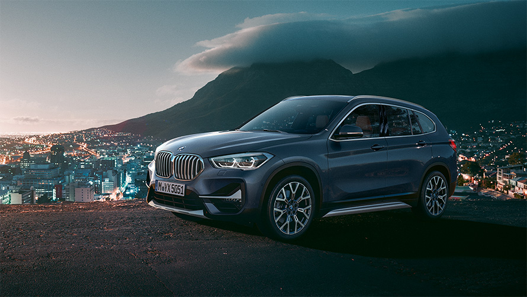Напередодні легендарної події: нова модель BMW X1 з’явилася, щоб встановити нові вимоги. Її бажання до дії виражається, в першу чергу, у спортивному дизайні. В авто можна відразу розпізнати представника покоління Х: в зовнішньому вигляді притягують до себе погляд короткі звиси, а також довга колісна база, які стали обов’язковими особливостями машин класу SAV (SportsActivityVehicle). Дизайн, динамічність та маневреність авто не дозволять сумніватися у його амбіціях, а комбінація дивовижної практичності з універсальністю в інноваційних технологіях забезпечує безмежний комфорт на кожному кілометрі.
BMW X2
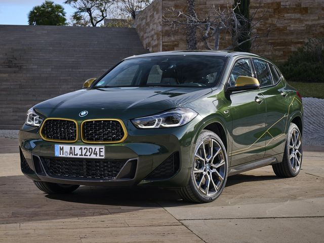Абсолютно унікальний. Екстремально незвичайний автомобіль. Новий BMW X2 з першого погляду показує свою спортивну сутність. Потужний і атлетичний, він пропонує динаміку і маневреність, які в цьому класі автомобілів не мають собі рівних. У поєднанні з високоякісним дизайном інтер'єру і численними інноваційними технологіями – це експресивний герой нової ери. Справа тільки за Вами. Ви готові?
BMW X3
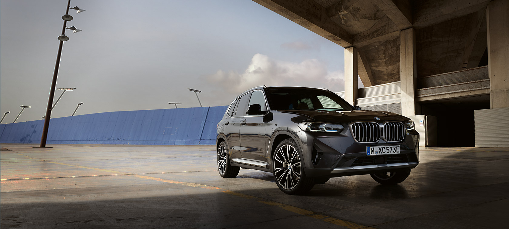Змініть своє уявлення про межі можливого для BMW X3. Автомобіль підкорює одразу: спортивний вигляд,
відчуття максимальної свободи, яскраві емоції від водіння і передчуття моменту, коли знову опиняєтеся
за кермом.
Ані найменшого натяку на складнощі й дискомфорт. Повний привід BMW xDrive впорається з
будь-якими проблемами, водіння можна частково покласти на асистентів. BMW X3 – законодавець мод у
своєму
сегменті. Справа не в тому, щоб дістатися з пункту А до пункту Б, а
в тому, як це зробити. Відчуйте, наскільки великою є різниця.
BMW X4
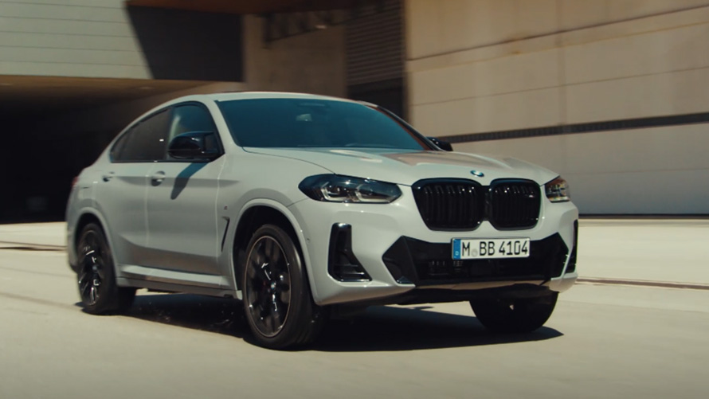Не має значення, які труднощі можуть з’явитися на Вашій дорозі, новий BMW X4 очікує їх з нетерпінням. Його інноваційний дизайн і купе-образні контури миттєво показують все своє бажання до подальших дій. За рахунок прекрасної динамічності їзди, модернізованої полегшеної конструкції із заниженим центром ваги, максимальним ступенем потужності перед Вами і кінцевим місцем подорожі знаходиться тільки одне – задоволення від їзди.
BMW X5
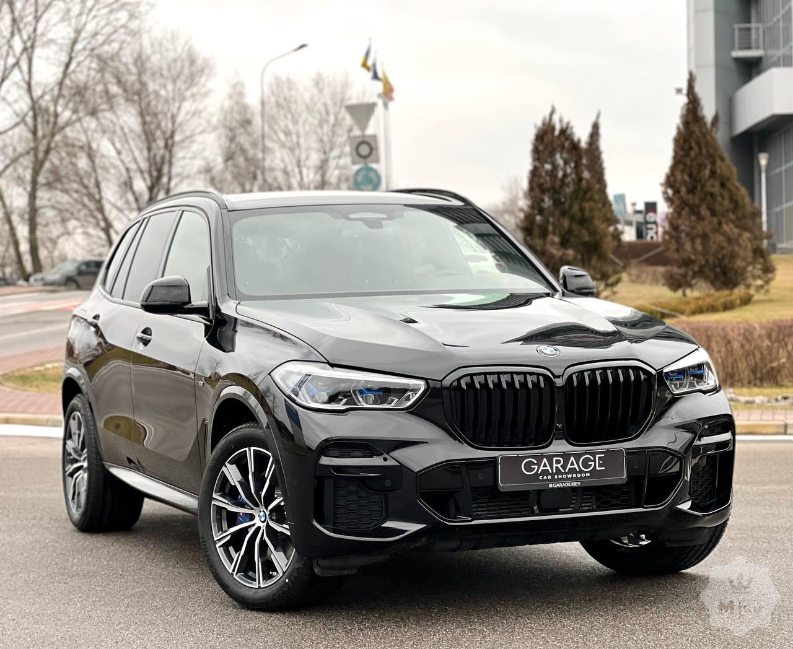Новий BMW X5 - лідер модельного ряду, який розставляє все по місцях. Цей високий, елегантний і сильний автомобіль неможливо не помітити. Потужна цільна подвійна решітка радіатора немов натякає на те, що станеться при запуску двигуна. Чудовий дизайн фар в стилі X не залишає сумнівів в тому, хто ж лідер. Завдяки інноваційним технологіям для максимальної динаміки і більшої безпеки на будь-яких покриттях новий BMW X5 знає куди рухатися. І як опинитися там першим.
BMW X6
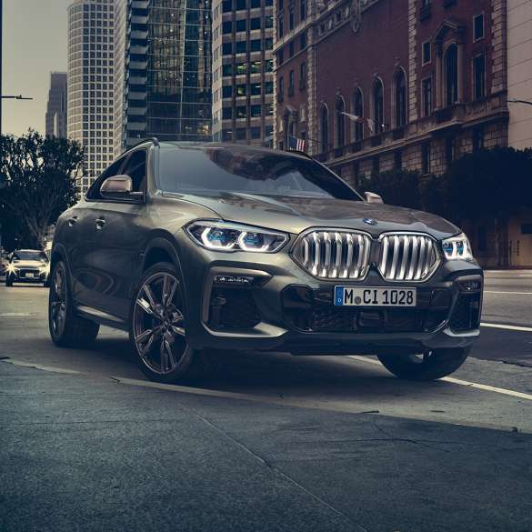BMW X6 – безкомпромісний та повний самовпевненості автомобіль. Він – втілення спортивного стилю та виразного дизайну. Його ексклюзивність та технології добре простежуються в радіаторній решітці «Iconic Glow». Вона підкреслює перевагу автомобіля серед інших моделей. Потужність BMW простежується під час його руху. Настроєна підвіска, двигун та додаткові функції, включені до пакета «xOffroad» роблять X6 швидким, надійним та максимально комфортним. З ним можна сміливо вирушати в далеку дорогу, проїжджаючи тисячі кілометрів по будь-яких дорогах. Випробуйте BMW X6 – перевершивши свої очікування.
BMW X7
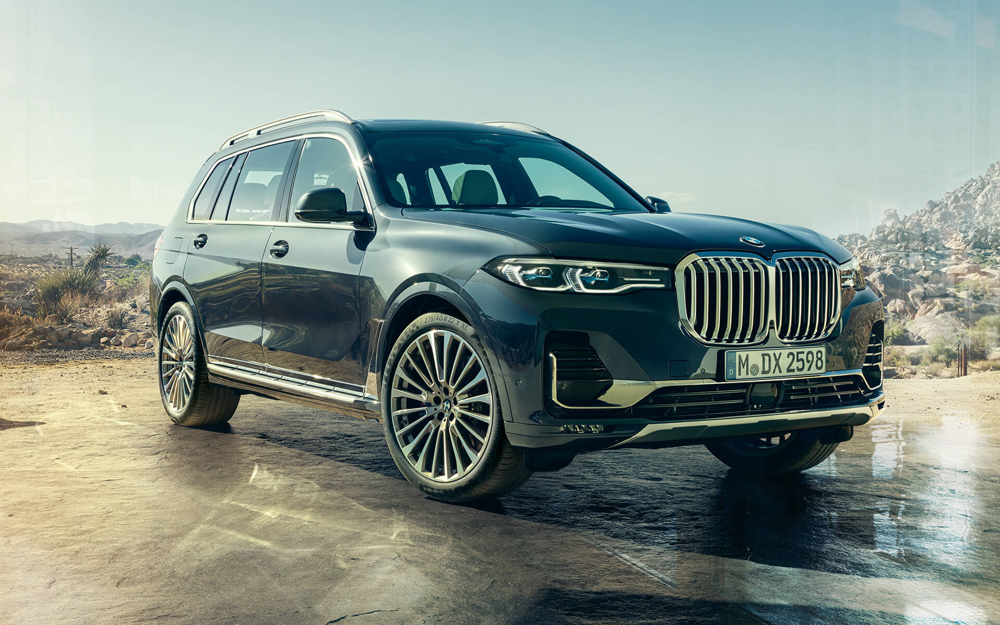Видатний зразок класу «люкс» – нова модель BMW X7 втілює в собі елегантну комбінацію унікальності та потужності. Незважаючи на розкішний зовнішній вигляд, авто легке та вирізняється дивовижною маневреністю за рахунок швидких та прямих ліній. Крім того, великий простір в салоні характеризує машину вдосконаленою комбінацією таких властивостей, як комфорт, мобільність та унікальність. Все це гарантує оптимальну зручність для пасажирів, куди входить 3-й ряд сидінь. Його природа – надзвичайність. Його темперамент – витонченість.
BMW 1 series
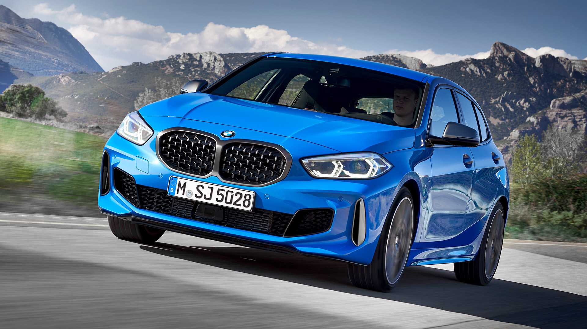Поява нового BMW 1 серії не може не привабити захоплених поглядів. Відразу
звертаєш увагу на видатний прогресивний дизайн автомобіля. У сучасній обставі салону вражають
першокласна якість і відкритість. Нові BMW 1 серії обладнані ефективними двигунами та переднім
приводом, уперше представленим у ній.
Застосування новітніх технологій принесе прекрасні враження
від водіння, наповненого динамікою та
маневреністю. З інноваційними технологіями та системами допомоги водієві гарантовані зручності та
безпека в поїздках.
BMW 2 series
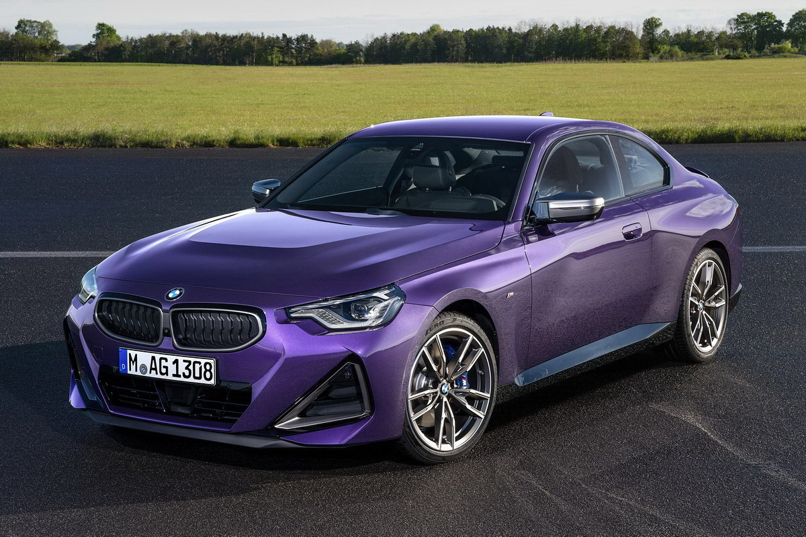BMW 2 серії Coupé - це сутність індивідуальності автомобіля, яка створює власний клас. Революційно спортивний дизайн випромінює динаміку, навіть стоячи нерухомо. Його задньопривідна динаміка з високим рівнем комфорту в ексклюзивному інтер'єрі доповнюють безкомпромісний досвід водіння. Це видно з самого першого моменту: коли ви сідаєте за кермо, є тільки один шлях - уперед.
BMW 3 series

Ледве виїхавши на дорогу, новий BMW 3 серії залишає позаду забобони та випереджає найсміливіші очікування. В черговий раз легендарна модель постає в новій іпостасі. Новий дизайн символізує початок нової ери. Досконалий спортивний седан керується ще більш потужними й економічними двигунами. Нове рішення: досить сказати: «ОК, BMW», - після чого новий автомобіль BMW 3 серії почне розпізнавати голос і практично передбачати ваші бажання.
BMW 4 series
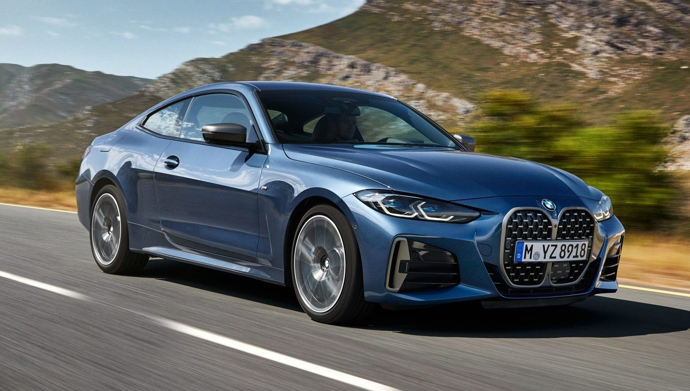Новий BMW 4 серії Coupe зберіг традиційний силует. Дизайн автомобіля заявляє, що ця модель унікальна і не визнає компромісів. Порівняно з попередниками – легендами минулих десятиліть – автомобіль став легшим. Це дозволило досягти ще більшої маневреності, просто неймовірної. Динамічність вражає: потужний автомобіль недосяжний на дорогах. Це привертає до нього додаткову увагу.
BMW 5 series

Щоб зрозуміти, яким повинен бути седан бізнес-класу, треба познайомитися з BMW
5 серії. Він зберігає традиційні для сімейства BMW риси: динамічний силует, стриманий дизайн,
підкреслено атлетичні пропорції. Поєднання чітких контурів і плавних поверхонь – перше, на чому
зупиняється увага при вивченні екстер’єру.
Сучасний автомобіль використовує
досягнення
інноваційних технологій. Вони проявляються як у зовнішньому вигляді, так і у вишукано
функціональному
салоні. BMW 5 серії постає в гармонії
неймовірної динаміки, привабливого комфорту, безпеки. Кожна поїздка, далека або нетривала, подарує
Вам
задоволення від водіння.
BMW 6 series
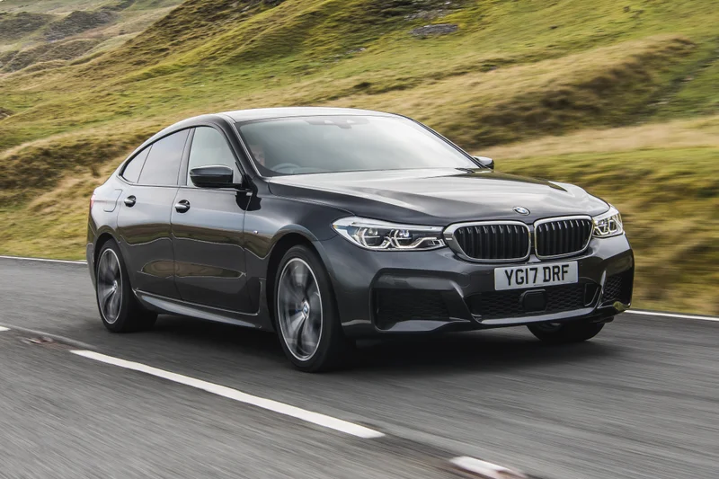Витонченість в кожній деталі: BMW 6 серії GT виступає синонімом елегантності і унікального дизайну, комфорту і неабияких ходових якостей. Виразний екстер'єр, прикрашений решіткою радіатора нової форми і модернізованими елементами фар, що підкреслюють унікальність оптики автомобіля, свідчать про прогресивний характер моделі. Вишуканий інтер'єр, виконаний з високоякісних матеріалів і доповнений інноваційними функціями, створює особливе відчуття розкоші і простору. Додайте сюди ідеальні налаштування ходової частини, і ви зрозумієте, що навіть в самій довгій поїздці на BMW 6 серії GT час пролетить непомітно.
BMW 7 series
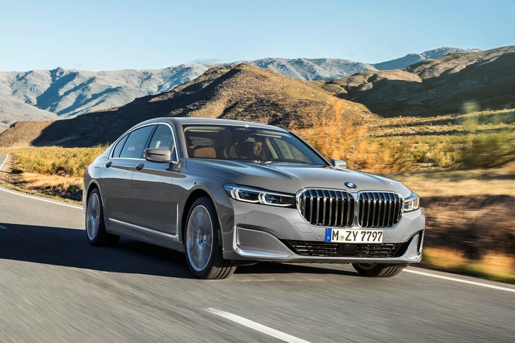BMW моделі 750Li привертає увагу своєю функціональністю, характеристиками й дизайном. Володіючи потужним восьмициліндровим двигуном TwinРower Turbo і повнопривідною системою xDrive, він стає лідером на дорозі, даючи можливість насолодитися поїздкою незалежно від околиць та її стану. Автомобіль виглядає елегантно, показуючи емоційність свого характеру за допомогою декоративних аксесуарів, що вигідно виділяють його на тлі інших моделей. Надійний і комфортний, він підходить для амбітних людей, які люблять життя та тривалі подорожі. Автомобіль безпечний і добре управляється за будь-яких погодних умов. BMW 750Li – ексклюзивний і розкішний, він підкреслить статус свого власника й приверне увагу оточуючих.
BMW 8 series

Поєднання динаміки та розкоші дає унікальний результат. Від BMW 8 серії Gran Coupé, чотирьохдверного спортивного автомобіля, буквально захоплює дух. Він вражає нестримною потужністю, приголомшливою маневреністю та унікальним стилем сучасного дизайну розкішного спортивного автомобіля. Енергійні двигуни дозволяють BMW 8 серії Gran Coupé демонструвати безкомпромісну спортивність характеру на кожному метрі простору.
BMW Z series
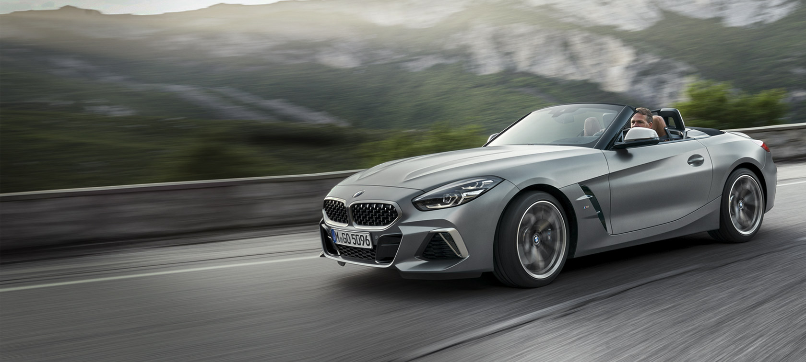Наявність в новому BMW Z4 Родстер даху, що відкидається знімає в автомобілі будь-які обмеження і створює масу задоволення при керуванні авто. Родстер, кращий в своєму класі: відкритий, динамічний і спортивний. Прогресивний дизайн і заявлена потужність відкривають безмежні можливості за кермом і створюють відчуття свободи.